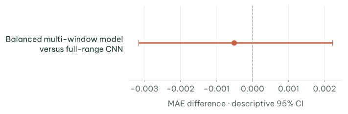
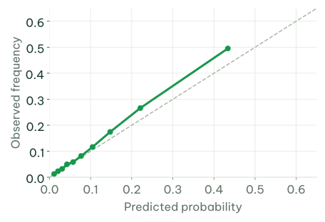

CT553H · Research briefing
Predicting degron
mutation effects
at residue level
Topic introduction, current findings
and next research steps
Nguyễn Thanh Trọng · B2305615
Supervisor: Dr. Hồ Quang Thái
Can Tho University
From sequence to a map of effects
Introduction
Degrons participate in protein degradation


Folded protein
An amino acid substitution can alter the recognition signal.
Introduction
One substitution corresponds to one cell in the effect map
Input: WT sequence, position and replacement amino acid. Output: ΔPSI.
Introduction
GPS converts reporter measurements into ΔPSI labels
ΔPSI = PSI(mutant) − PSI(WT). Positive: a more stable reporter in this assay.
Introduction
HIF1A illustrates position-specific mutation effects
529 / 532substitutions with measured labels
Region L–A–P–Y–I stands out in the measured map.
Measured labels, not predictions
Within one peptide, mutation effects differ substantially across positions.
Introduction
The practical goal is to prioritize mutations for experiments
Effect map → shortlist → experimental validation.
| Approach | Main target | Role in this project |
|---|
| PAP | Whole-peptide activity | Score difference after a substitution |
| Degformer | PSI from sequence | Already provides mutation-effect maps |
| MetaDegron | Motifs / candidate degrons | Adds annotations and E3 context |
| This project | Effects of individual substitutions | Measured labels, baselines and group-based evaluation |
Focus: predictive evidence, evaluation and a useful analysis tool.
Main scope: single-substitution effects in 28-residue reporter peptides.
Each question needs an appropriate comparison and clear limits of inference.
Data and approach
Each data source serves a defined role
Tile-level scores and annotations are not mutation-effect labels.
Data and approach
The two mutation designs provide complementary coverage
Scanning expands context coverage; saturation covers all substitution types.
Data and approach
Each assay needs the correct WT reference
Keep sources, conditions and replicates separate when deriving effect labels.
Data and approach
Label reproducibility constrains how results should be interpreted
0.8335correlation of ΔPSI across the two saturation halves
235 peptides · 122,412 cells
Peptide-level reliability differs from position-level reliability.
Model residuals can contain both signal and measurement noise.
Data and approach
Split by protein group to assess generalization
Restricted domain: 91 peptides. Full range: 235 peptides in 221 protein groups.
Data and approach
Prediction error, ranking and experimental budget are distinct goals
Compute metrics per peptide; bootstrap confidence intervals by protein group.
Most of the gain comes from local amino acid composition.
Retaining order adds a smaller benefit.
Evaluation on scanning
A context baseline is essential before adding model complexity.
5.94%lower MAE: full range versus training only at PSI ≤ 4
MAE difference: −0.0258 PSI
Adjusted CI: −0.0338 to −0.0183.
Error improves, but the adjusted interval does not establish a minimum 0.02 PSI reduction.
High-PSI peptides benefit more.
Balancing the data can trade off performance in the low-PSI domain.
Choose the training distribution for both the overall objective and the intended domain.
ESM-only and context-plus-ESM trade off MAE against ranking.
Validation-based selection evaluates a selection procedure.
Only ESM2-35M was evaluated on the full-range benchmark; pLM families cannot yet be ranked.
Compared with pointwise:
MAE decreases by 0.00534 PSI.
The matched-input comparison supports position mixing; one-hot results remain unresolved.

The best development MAE alone is insufficient to select a final model.
0.8098AUROC after tile pretraining
0.8175same encoder, random initialization
The negative result applies to the tested transfer design, not to all pretraining strategies.
20 observed types:
MAE decreases by 0.00772.
360 remaining types:
MAE decreases by 0.00631.
Both descriptive CIs favor improvement
Quality weighting increases error; averaging replicates has no clear advantage over replicate 1.
91 / 91WT peptides seen in the published checkpoint's training data
Masking duplicate cells does not create unseen peptides.
Group-clean retraining reaches AUROC 0.8068, with no demonstrated advantage over Ridge.
58.24%positive-event precision in the top 5%
Context Ridge: 51.89%.
Negative events remain harder; consider their lower prevalence.
This demonstrates prioritization utility, not calibrated probabilities.
156 / 235peptides with lower MAE than Ridge
9.33 hours of completed task time.
The two frozen tasks account for 7.23 hours.
LoRA has no complete OOF results yet.
Ensembling reduces variance; seeds and folds are not independent datasets.
Ridge evaluated on the 91-peptide domain

Calibration evidence belongs to the tested model; the CNN needs its own calibration procedure.
PSI differs across sources; a peptide model does not establish whole-protein effects.
Analysis tool
The tool combines the effect map and shortlist in one workflow

Design prototype · illustrative data · no backend connection
Enter a peptide → inspect the map → select substitutions → annotate → export.
Analysis tool
A local application keeps results with their provenance
Each result carries its model version, data sources and intended scope.
Analysis tool
The software baseline provides a foundation for extension
| Implemented baseline | In development / integration needed |
|---|
| Single peptide · effect map · ranking | Batch and whole-protein workflows |
| Exports · model and source pages | Persistent projects and history |
| Inference checked against the runner | Import and compare experimental data |
| React / FastAPI baseline code | New model · calibration · domain assessment |
Baseline tests retain their original scope; extensions require separate verification.
Progress and next steps
Completed work provides a foundation for the next research steps
Development findings and explicit limitations now guide the next steps.
Progress and next steps
Next priorities: lock the model choice and evaluate transfer
LoRA and structure remain optional branches, guided by the question and available resources.
Faculty discussion
Discussion: research direction and next steps
Reference appendix
Terminology and how to read the metrics
Residue: an amino acid at a position. WT: reference sequence. OOF: out-of-fold predictions.
Reference appendix
Label construction and quality-control details
Synonymous constructs provide intrinsic WT references; missing cells are masked and conditions kept separate.
Reference appendix
Reliability depends on the level of analysis
| Measure | Scanning | Saturation |
|---|
| ΔPSI across replicates | Pearson 0.7229 | Pearson 0.8335 |
| Reproducibility of positive labels | Position Jaccard: 0.4965 | Cell Jaccard: 0.6596 |
| Population | Scanning-specific filters | 235 peptides / 122,412 cells |
Cohorts and position/cell definitions differ; this is not a paired comparison.
Reference appendix
Composition models cannot distinguish every position
Within a peptide, a composition-only model assigns the same score to the same substitution type.
Reference appendix
Learning curves must distinguish individual models from ensembles
Training subsets differ across seeds.
An ensemble may see a larger union of data than each member.
Clustering sensitivity is a separate check; identical partitions are not additional evidence.
Reference appendix
The tested interaction designs did not consistently beat the baseline
| Design | AUROC on the 91-peptide domain | Interpretation |
|---|
| Ridge | 0.8082 | Baseline under the same design |
| Gate + residual PAP | 0.8002 | The gate effect changes sign across seeds |
| FiLM | 0.8028 | No demonstrated improvement over Ridge |
| Bilinear | 0.7933 | Lower performance than Ridge |
These results concern the tested designs, not all possible nonlinear interactions.
Reference appendix
Removing duplicate cells does not remove peptide-level overlap
The published checkpoint contains 42,163 / 47,847 mutation cells in training.
WT sequences of all 91 peptides have already been seen.
Evaluate on held-out peptides or protein groups.
Reference appendix
ESM scale comparisons belong to a separate evaluation design
| Additional Ridge representation | AUROC · 91-peptide domain | Finding |
|---|
| ESM2 8M | 0.8214 | Confidence interval remains inconclusive |
| ESM2 35M | 0.8234 | Confidence interval remains inconclusive |
| ESM2 150M | 0.8207 | Confidence interval remains inconclusive |
| ESM2 650M | 0.8230 | Confidence interval remains inconclusive |
Do not directly compare these AUROCs with the full-range benchmark.
Reference appendix
Inspect several metrics for the same candidates
Scores use mean predictions from three seeds and remain development analysis.
Reference appendix
Scanning transfer: assess observed and remaining substitution types
The 20-type cohort has 6,433 cells; the 360-type cohort has 115,979 cells. Both cover 235 peptides.
Reference appendix
ClinVar supports region-level motivation, not residue-level validation
2.15region-level pathogenic-versus-benign odds ratio
Stratified by protein.
A residue-level link between ΔPSI and pathogenicity has not been established.
ClinVar provides context and annotation, not ΔPSI ground truth.
Reference appendix
E3 labels are too sparse for an E3-conditioned task
| Adaptor / E3 | Peptides in the audit |
|---|
| KLHL15 | 13 |
| BAG6 | 4 |
| ASB7 / FEM1B | 2 per group |
| Other groups | Mostly one peptide each |
Only one group has at least five peptides; menu choices are not learnable class counts.
Reference appendix
External sources need endpoint and usability audits
| Sources | Potential use | Limitations |
|---|
| Koren | Mutations in C-terminal degrons | Different scale / length; only 5 new groups |
| Larsen | Nuclear tile activity | No additional mutation ΔPSI labels |
| MaveDB | Whole-protein variant effects | Endpoint and structure need separate audits |
Auditing a source does not establish external validation of the current model.
Reference appendix
Calibration and domain assessment answer different questions
Are event probabilities reliable?
Is the peptide within the applicability domain?
Reassess both when the model or data scope changes.
Reference appendix
Reproducibility connects data, models and served results
The manifest verified 2,986 files; baseline app tests do not validate new features.
Reference appendix
References and evidence are organized by topic
Related workZhang · Voutsinos · Degformer · MetaDegron · Larsen
Open Notes for the current slide's sources and interpretation limits.